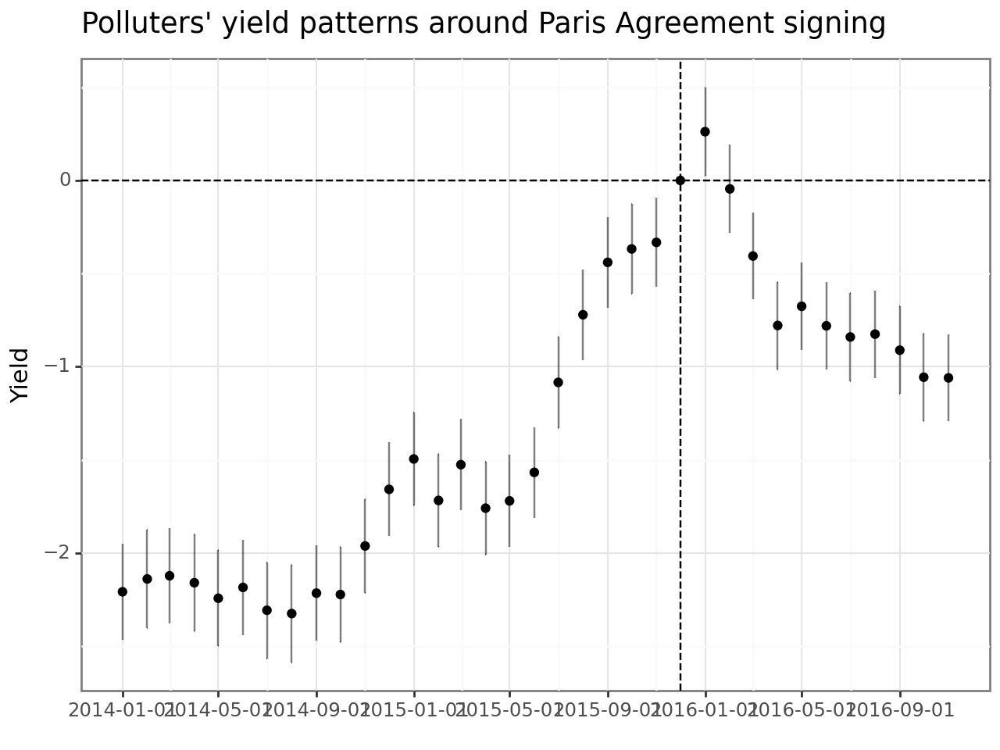

import pandas as pd
import numpy as np
import sqlite3
import linearmodels as lm
import statsmodels.formula.api as smf
from plotnine import *
from scipy.stats import normDifference in Differences
Note
You are reading the work-in-progress edition of Tidy Finance with Python. Code chunks and text might change over the next couple of months. We are always looking for feedback via contact@tidy-finance.org. Meanwhile, you can find the complete R version here.
In this chapter, we illustrate the concept of difference in differences (DD) estimators by evaluating the effects of climate change regulation on the pricing of bonds across firms. DD estimators are typically used to recover the treatment effects of natural or quasi-natural experiments that trigger sharp changes in the environment of a specific group. Instead of looking at differences in just one group (e.g., the effect in the treated group), DD investigates the treatment effects by looking at the difference between differences in two groups. Such experiments are usually exploited to address endogeneity concerns (e.g., Roberts and Whited 2013). The identifying assumption is that the outcome variable would change equally in both groups without the treatment. This assumption is also often referred to as the assumption of parallel trends. Moreover, we would ideally also want a random assignment to the treatment and control groups. Due to lobbying or other activities, this randomness is often violated in (financial) economics.
In the context of our setting, we investigate the impact of the Paris Agreement (PA), signed on December 12, 2015, on the bond yields of polluting firms. We first estimate the treatment effect of the agreement using panel regression techniques that we discuss in Fixed Effects and Clustered Standard Errors. We then present two methods to illustrate the treatment effect over time graphically. Although we demonstrate that the treatment effect of the agreement is anticipated by bond market participants well in advance, the techniques we present below can also be applied to many other settings.
The approach we use here replicates the results of Seltzer, Starks, and Zhu (2022) partly. Specifically, we borrow their industry definitions for grouping firms into green and brown types. Overall, the literature on ESG effects in corporate bond markets is already large but continues to grow (for recent examples, see, e.g., Halling, Yu, and Zechner (2021), Handler, Jankowitsch, and Pasler (2022), Huynh and Xia (2021), among many others).
The current chapter relies on this set of packages.
Compared to previous chapters, we introduce the scipy.stats module from the scipy (Virtanen et al. 2020) for simple retrieval of quantiles of the standard normal distribution.
Data Preparation
We use TRACE and Mergent FISD as data sources from our SQLite-database introduced in Chapters 2-4.
tidy_finance = sqlite3.connect("data/tidy_finance_python.sqlite")
mergent = (pd.read_sql_query(
sql="SELECT complete_cusip, maturity, offering_amt, sic_code FROM mergent",
con=tidy_finance,
parse_dates={"maturity"}
)
.dropna()
)
trace_enhanced = (pd.read_sql_query(
sql="SELECT cusip_id, trd_exctn_dt, rptd_pr, entrd_vol_qt, yld_pt FROM trace_enhanced",
con=tidy_finance,
parse_dates={"trd_exctn_dt"}
)
.dropna()
)We start our analysis by preparing the sample of bonds. We only consider bonds with a time to maturity of more than one year to the signing of the PA, so that we have sufficient data to analyze the yield behavior after the treatment date. This restriction also excludes all bonds issued after the agreement. We also consider only the first two digits of the SIC industry code to identify the polluting industries (in line with Seltzer, Starks, and Zhu 2022).
treatment_date = pd.to_datetime("2015-12-12")
polluting_industries = [
49, 13, 45, 29, 28, 33, 40, 20,
26, 42, 10, 53, 32, 99, 37
]
bonds = (mergent
.query("offering_amt > 0")
.assign(
time_to_maturity = lambda x: (x["maturity"]-treatment_date).dt.days / 365,
sic_code = lambda x: x["sic_code"].astype(str).str[:2].astype(int),
log_offering_amt = lambda x: np.log(x["offering_amt"])
)
.query("time_to_maturity >= 1")
.rename(columns={"complete_cusip": "cusip_id"})
.get(["cusip_id", "time_to_maturity", "log_offering_amt", "sic_code"])
.assign(
polluter = lambda x: x["sic_code"].isin(polluting_industries)
)
.reset_index(drop=True)
)Next, we aggregate the individual transactions as reported in TRACE to a monthly panel of bond yields. We consider bond yields for a bond’s last trading day in a month. Therefore, we first aggregate bond data to daily frequency and apply common restrictions from the literature (see, e.g., Bessembinder et al. 2008). We weigh each transaction by volume to reflect a trade’s relative importance and avoid emphasizing small trades. Moreover, we only consider transactions with reported prices rptd_pr larger than 25 (to exclude bonds that are close to default) and only bond-day observations with more than five trades on a corresponding day (to exclude prices based on too few, potentially non-representative transactions).
trace_aggregated = (trace_enhanced
.query("rptd_pr > 25")
.groupby(["cusip_id", "trd_exctn_dt"])
.aggregate(
avg_yield = ("yld_pt", lambda x: np.average(x, weights=trace_enhanced
.loc[x.index, "entrd_vol_qt"]
* trace_enhanced
.loc[x.index, "rptd_pr"])),
trades = ("rptd_pr", "count")
)
.reset_index()
.dropna(subset=["avg_yield"])
.query("trades >= 5")
.assign(
trd_exctn_dt = lambda x: pd.to_datetime(x["trd_exctn_dt"])
)
.assign(
month = lambda x: x["trd_exctn_dt"] - pd.tseries.offsets.MonthBegin()
)
.groupby(["cusip_id", "month"])
.apply(lambda x: x[x["trd_exctn_dt"] == x["trd_exctn_dt"].max()])
.reset_index(drop=True)
.get(["cusip_id", "month", "avg_yield"])
)By combining the bond-specific information from Mergent FISD for our bond sample with the aggregated TRACE data, we arrive at the main sample for our analysis.
bonds_panel = (bonds
.merge(trace_aggregated, how="inner", on="cusip_id")
.dropna()
)Before we can run the first regression, we need to define the treated indicator, which is the product of the post_period (i.e., all months after the signing of the PA) and the polluter indicator defined above.
bonds_panel = (bonds_panel
.assign(post_period = lambda x:x["month"] >= (treatment_date- pd.tseries.offsets.MonthBegin()))
.assign(treated = lambda x: x["polluter"] & x["post_period"])
.assign(month_cat = lambda x: pd.Categorical(x["month"], ordered=True))
)As usual, we tabulate summary statistics of the variables that enter the regression to check the validity of our variable definitions.
bonds_panel_summary = (bonds_panel
.melt(var_name="measure",
value_vars=["avg_yield", "time_to_maturity", "log_offering_amt"]
)
.groupby("measure")
.describe(percentiles=[0.05, 0.5, 0.95])
)
bonds_panel_summary | value | ||||||||
|---|---|---|---|---|---|---|---|---|
| count | mean | std | min | 5% | 50% | 95% | max | |
| measure | ||||||||
| avg_yield | 127546.0 | 4.082738 | 4.214692 | 0.059488 | 1.267653 | 3.375275 | 8.112560 | 127.968831 |
| log_offering_amt | 127546.0 | 13.273511 | 0.824175 | 4.644391 | 12.206073 | 13.217674 | 14.508658 | 16.523561 |
| time_to_maturity | 127546.0 | 8.546399 | 8.414972 | 1.005479 | 1.501370 | 5.808219 | 27.410959 | 100.704110 |
Panel Regressions
The PA is a legally binding international treaty on climate change. It was adopted by 196 Parties at COP 21 in Paris on 12 December 2015 and entered into force on 4 November 2016. The PA obliges developed countries to support efforts to build clean, climate-resilient futures. One may thus hypothesize that adopting climate-related policies may affect financial markets. To measure the magnitude of this effect, we first run an OLS regression without fixed effects where we include the treated, post_period, and polluter dummies, as well as the bond-specific characteristics log_offering_amt and time_to_maturity. This simple model assumes that there are essentially two periods (before and after the PA) and two groups (polluters and non-polluters). Nonetheless, it should indicate whether polluters have higher yields following the PA compared to non-polluters.
The second model follows the typical DD regression approach by including individual (cusip_id) and time (month) fixed effects. In this model, we do not include any other variables from the simple model because the fixed effects subsume them, and we observe the coefficient of our main variable of interest: treated.
model_without_fe = lm.PanelOLS.from_formula(
formula=("avg_yield ~ treated + post_period + polluter "
"+ log_offering_amt + time_to_maturity + 1"),
data=bonds_panel.set_index(["cusip_id", "month"]),
).fit()
model_with_fe = lm.PanelOLS.from_formula(
formula="avg_yield ~ treated + EntityEffects + TimeEffects",
data=bonds_panel.set_index(["cusip_id", "month"]),
).fit()
comparison = lm.panel.results.compare([model_without_fe, model_with_fe])
comparison| Model 0 | Model 1 | |
| Dep. Variable | avg_yield | avg_yield |
| Estimator | PanelOLS | PanelOLS |
| No. Observations | 127546 | 127546 |
| Cov. Est. | Unadjusted | Unadjusted |
| R-squared | 0.0321 | 0.0071 |
| R-Squared (Within) | 0.0044 | 0.0118 |
| R-Squared (Between) | -0.0003 | 0.0475 |
| R-Squared (Overall) | 0.0321 | 0.0341 |
| F-statistic | 847.04 | 858.22 |
| P-value (F-stat) | 0.0000 | 0.0000 |
| ===================== | ============ | ============ |
| Intercept | 10.733 | |
| (57.058) | ||
| treated | 0.4534 | 0.9745 |
| (9.1364) | (29.295) | |
| post_period | -0.1776 | |
| (-6.0415) | ||
| polluter | 0.4861 | |
| (15.427) | ||
| log_offering_amt | -0.5503 | |
| (-38.991) | ||
| time_to_maturity | 0.0576 | |
| (41.527) | ||
| ======================= | ============== | ============== |
| Effects | Entity | |
| Time |
T-stats reported in parentheses
id: 0x17f6d0a00
Both models indicate that polluters have significantly higher yields after the PA than non-polluting firms. Note that the magnitude of the treated coefficient varies considerably across models.
Visualizing Parallel Trends
Even though the regressions above indicate that there is an impact of the PA on bond yields of polluters, the tables do not tell us anything about the dynamics of the treatment effect. In particular, the models provide no indication about whether the crucial parallel trends assumption is valid. This assumption requires that in the absence of treatment, the difference between the two groups is constant over time. Although there is no well-defined statistical test for this assumption, visual inspection typically provides a good indication.
To provide such visual evidence, we revisit the simple OLS model and replace the treated and post_period indicators with month dummies for each group. This approach estimates the average yield change of both groups for each period and provides corresponding confidence intervals. Plotting the coefficient estimates for both groups around the treatment date shows us the dynamics of our panel data.
model_without_fe_time = (smf.ols(
formula=("avg_yield ~ polluter + month_cat:polluter "
"+ time_to_maturity + log_offering_amt"),
data=bonds_panel)
.fit()
.summary()
)
model_without_fe_coefs = (
pd.DataFrame(model_without_fe_time.tables[1].data[1:],
columns=["term", "estimate", "std_error",
"t_stat", "p_value", "ci_1", "ci_2"])
.query("term.str.contains('month_cat')")
.assign(month = lambda x: x["term"].str.extract(r"(\d{4}-\d{2}-\d{2} \d{2}:\d{2}:\d{2})"))
.assign(month=lambda x: pd.to_datetime(x["month"]))
.assign(treatment = lambda x: x["term"].str.contains("True"))
.assign(estimate = lambda x: x["estimate"].astype(float),
std_error = lambda x: x["std_error"].astype(float))
.assign(ci_up = lambda x: x["estimate"] + norm.ppf(0.975) * x["std_error"],
ci_low = lambda x: x["estimate"] + norm.ppf(0.025) * x["std_error"])
)
polluters_plot = (
ggplot(model_without_fe_coefs, aes(x="month", y="estimate",
color="treatment", linetype="treatment", shape="treatment")) +
geom_vline(xintercept=pd.to_datetime(treatment_date) -
pd.tseries.offsets.MonthBegin(), linetype="dashed") +
geom_hline(yintercept=0, linetype="dashed") +
geom_errorbar(aes(ymin="ci_low", ymax="ci_up"), alpha=0.5) +
geom_point() +
guides(linetype=None) +
labs(
x="", y="Yield", shape="Polluter?", color="Polluter?",
title="Polluters respond stronger to Paris Agreement than green firms"
) +
scale_linetype_manual(values=["solid", "dashed"])
)
polluters_plot.draw()
Figure 1 shows that throughout most of 2014, the yields of the two groups changed in unison. However, starting at the end of 2014, the yields start to diverge, reaching the highest difference around the signing of the PA. Afterward, the yields for both groups fall again, and the polluters arrive at the same level as at the beginning of 2014. The non-polluters, on the other hand, even experience significantly lower yields than polluters after the signing of the agreement.
Instead of plotting both groups using the simple model approach, we can also use the fixed-effects model and focus on the polluter’s yield response to the signing relative to the non-polluters. To perform this estimation, we need to replace the treated indicator with separate time dummies for the polluters, each marking a one-month period relative to the treatment date. We then regress the monthly yields on the set of time dummies and cusip_id and month fixed effects.
bonds_panel_alt = (bonds_panel
.assign(
diff_to_treatment = lambda x:
np.round(((x["month"] - (treatment_date - pd.tseries.offsets.MonthBegin())).dt.days / 365) * 12, 0).astype(int)
)
)
variables = (bonds_panel_alt[["diff_to_treatment", "month"]]
.drop_duplicates()
.sort_values("month")
.copy()
.assign(variable_name=np.nan)
.reset_index(drop=True)
)
formula = "avg_yield ~ 1 + "
for j in range(variables.shape[0]):
if variables["diff_to_treatment"].iloc[j] != 0:
old_names = list(bonds_panel_alt.columns)
bonds_panel_alt["new_var"] = (bonds_panel_alt["diff_to_treatment"] ==
variables["diff_to_treatment"]
.iloc[j]) & bonds_panel_alt["polluter"]
diff_to_treatment_value = variables["diff_to_treatment"].iloc[j]
direction = "lag" if diff_to_treatment_value < 0 else "lead"
abs_diff_to_treatment = int(abs(diff_to_treatment_value))
new_var_name = f"{direction}{abs_diff_to_treatment}"
variables.at[j, "variable_name"] = new_var_name
bonds_panel_alt[new_var_name] = bonds_panel_alt["new_var"]
formula += (f" + {new_var_name}" if j > 0 else new_var_name)
formula = formula + " + EntityEffects + TimeEffects"
model_with_fe_time = (lm.PanelOLS.from_formula(
formula=formula,
data=bonds_panel_alt.set_index(["cusip_id", "month"]))
.fit()
.summary
)
lag0_row = pd.DataFrame({
"term": ["lag0"],
"estimate": [0],
"ci_1": [0],
"ci_2": [0],
"ci_up": [0],
"ci_low": [0],
"month": [treatment_date - pd.tseries.offsets.MonthBegin()]
})
model_with_fe_time_coefs = (
pd.DataFrame(model_with_fe_time.tables[1].data[1:],
columns=["term", "estimate", "std_error",
"t_stat", "p_value", "ci_1", "ci_2"])
.assign(term=lambda x: x["term"].str.replace("[T.True]", ""))
.assign(estimate=lambda x: x["estimate"].astype(float),
std_error=lambda x: x["std_error"].astype(float))
.assign(ci_up=lambda x: x["estimate"] + norm.ppf(0.975) * x["std_error"],
ci_low=lambda x: x["estimate"] + norm.ppf(0.025) * x["std_error"])
.merge(variables, how="left", left_on="term", right_on="variable_name")
.drop(columns="variable_name")
.query("term != 'Intercept'")
)
model_with_fe_time_coefs = pd.concat(
[model_with_fe_time_coefs, lag0_row], ignore_index=True)
polluter_plot = (
ggplot(model_with_fe_time_coefs, aes(x="month", y="estimate")) +
geom_vline(aes(xintercept=treatment_date - pd.tseries.offsets.MonthBegin()),
linetype="dashed") +
geom_hline(aes(yintercept=0), linetype="dashed") +
geom_errorbar(aes(ymin="ci_low", ymax="ci_up"), alpha=0.5) +
geom_point(aes(y="estimate")) +
labs(x="", y="Yield",
title="Polluters' yield patterns around Paris Agreement signing")
)
polluter_plot.draw()

The resulting graph shown in Figure 2 confirms the main conclusion of the previous image: polluters’ yield patterns show a considerable anticipation effect starting toward the end of 2014. Yields only marginally increase after the signing of the agreement. However, as opposed to the simple model, we do not see a complete reversal back to the pre-agreement level. Yields of polluters stay at a significantly higher level even one year after the signing.
Notice that during the year after the PA was signed, the 45th President of the United States was elected on November 8, 2016. During his campaign there were some indications of intentions to withdraw the US from the PA, which ultimately happened on November 4, 2020. Hence, reversal effects are potentially driven by these actions.
Exercises
- The 46th President of the US rejoined the Paris Agreement in February 2021. Repeat the difference in differences analysis for the day of his election victory. Note that you will also have to download new TRACE data. How did polluters’ yields react to this action?
- Based on the exercise on ratings in TRACE and FISD, include ratings as a control variable in the analysis above. Do the results change?
References
Bessembinder, Hendrik, Kathleen M Kahle, William F Maxwell, and Danielle Xu. 2008. “Measuring abnormal bond performance.” Review of Financial Studies 22 (10): 4219–58. https://doi.org/10.1093/rfs/hhn105.
Halling, Michael, Jin Yu, and Josef Zechner. 2021. “Primary Corporate Bond Markets and Social Responsibility.” Working Paper. https://dx.doi.org/10.2139/ssrn.3681666.
Handler, Lukas, Rainer Jankowitsch, and Alexander Pasler. 2022. “The Effects of ESG Performance and Preferences on US Corporate Bond Prices.” Working Paper. https://dx.doi.org/10.2139/ssrn.4099566.
Huynh, Thanh D., and Ying Xia. 2021. “Climate Change News Risk and Corporate Bond Returns.” Journal of Financial and Quantitative Analysis 56 (6): 1985–2009. https://doi.org/10.1017/S0022109020000757.
Roberts, Michael R., and Toni M. Whited. 2013. “Endogeneity in Empirical Corporate Finance.” In Handbook of the Economics of Finance, 2:493–572. Elsevier. https://EconPapers.repec.org/RePEc:eee:finchp:2-a-493-572.
Seltzer, Lee H., Laura Starks, and Qifei Zhu. 2022. “Climate Regulatory Risk and Corporate Bonds.” Working Paper. https://www.nber.org/papers/w29994.
Virtanen, Pauli, Ralf Gommers, Travis E. Oliphant, Matt Haberland, Tyler Reddy, David Cournapeau, Evgeni Burovski, et al. 2020. “SciPy 1.0: Fundamental Algorithms for Scientific Computing in Python.” Nature Methods 17: 261–72. https://doi.org/10.1038/s41592-019-0686-2.